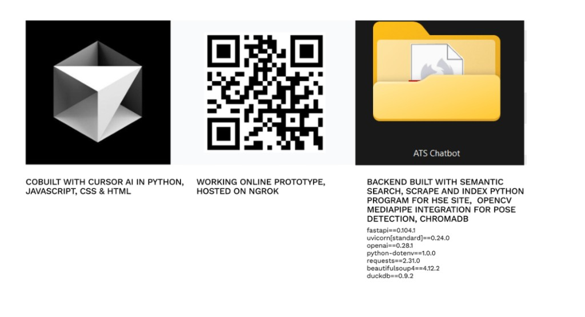

12 User Tests
User tests conducted in simulated college, at home, and in a nightclub.
An AI-powered medical UX concept for high-pressure nightlife emergencies in Dublin. ATS uses an intelligent triage chatbot to support non-clinicians through the first critical minutes of care, when uncertainty and hesitation often delay life-saving action.


The Problem

The Moment
Solution Concept


Prototype

System Logic
ATS mirrors real triage behaviour with a clinically ordered care flow.
Validated across 12 user tests (3 in person, 4 paper prototype, 5 digital) in simulated college, home, and nightlife contexts.
Outcomes
Implementation

Research
User tests conducted in simulated college, at home, and in a nightclub.
“I found myself to feel a little bit, not only less safe, but less like people would intervene to help me if something were to happen.”
Up next